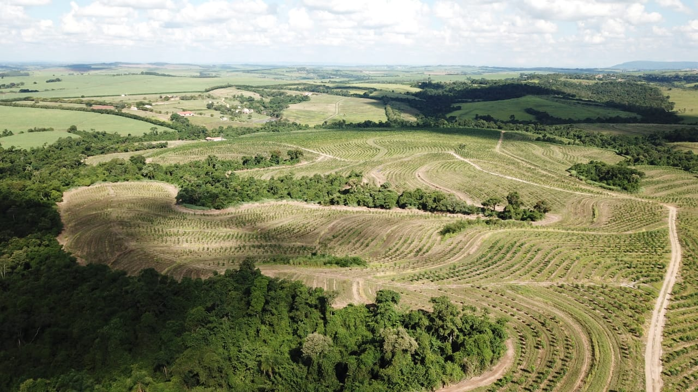
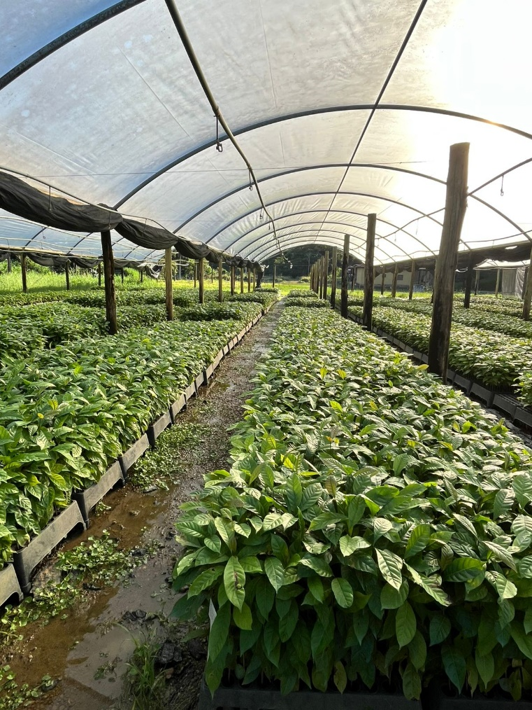
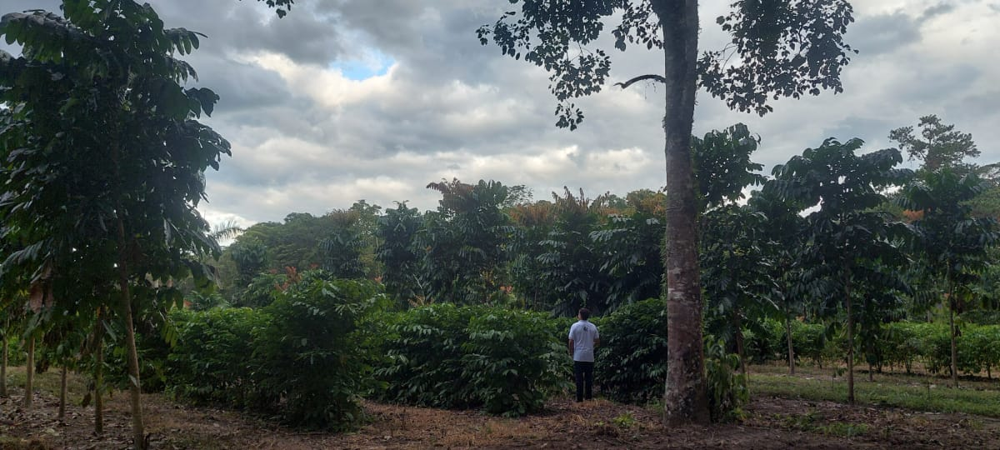
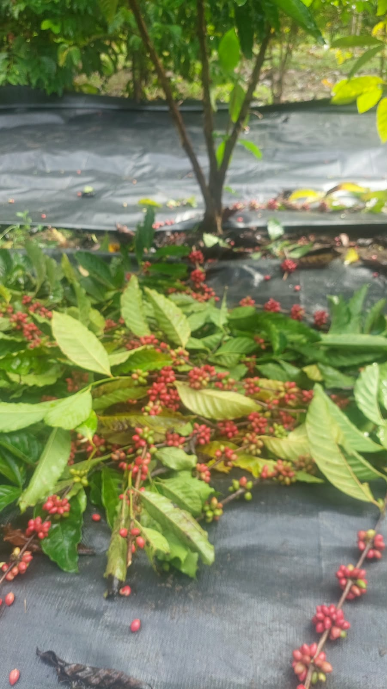
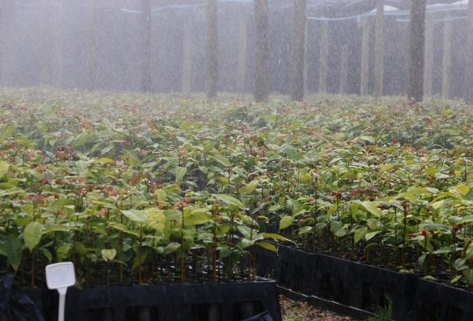
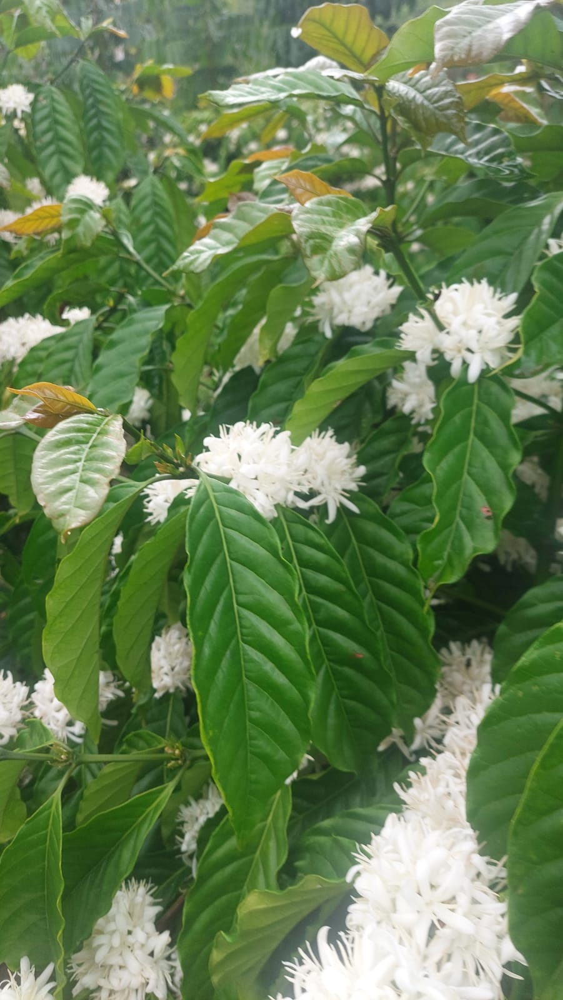

Tenha seu próprio cafezal no Brasil.
Produza seu café sem terra, sem conhecimento técnico e sem rotina operacional. Nós cuidamos de tudo, do plantio à venda.
Sua fazenda de café, sem o trabalho de uma fazenda de café.
Nossa proposta foi pensada para quem não atua no setor rural. Você não precisa de terra, de conhecimento técnico nem de envolvimento no dia a dia do campo.
Sem terra
A área do plantio é por nossa conta.
Sem conhecimento técnico
Nossa equipe agronômica cuida de tudo.
Sem rotina operacional
Zero envolvimento no dia a dia do campo.
Você sonha, nós realizamos.
Uma gestão completa. Do solo à saca.
Análise e seleção
Identificamos áreas com máxima aptidão técnica para o café.
Preparo e plantio
Preparamos o solo, produzimos as mudas de alta qualidade e plantamos para você.

Condução do cafezal
Fazemos toda a manutenção e os tratos culturais até a maturidade. Maquinário e mão de obra.

Colheita
Colhemos no ponto ideal de maturação.

Beneficiamento
Beneficiamos e preparamos os grãos para a comercialização.
Comercialização
Negociamos e vendemos a produção para o mercado nacional e internacional de café.
Quem cuida do seu cafezal
anos de atuação no agronegócio no Vale do Ribeira/SP
fazendas sob nossa gestão
Rastreabilidade: padrão genético e qualidade em todas as nossas mudas


Por que o Vale do Ribeira?
A nova fronteira estratégica do café
O Vale do Ribeira contém o maior maciço de Mata Atlântica preservada do Brasil. É uma região extremamente qualificada para a agricultura, com clima e solo favoráveis para o cultivo.
Sua área extensa permite o crescimento da cultura cafeeira, e sua localização é próxima de dois dos principais portos do Brasil: Santos e Paranaguá.
A produção de café Canephora na região já foi testada e confirmada com excelente qualidade.
A cerca de 200 km de São Paulo
Seu único papel: decidir o tamanho da sua área de plantio.
A você, cabe apenas decidir com quantos hectares deseja participar do projeto. Toda a gestão agrícola, operacional e comercial fica sob nossa responsabilidade.
Como bônus, você pode visitar o seu cafezal e, no futuro, tomar um café da sua própria produção.
Quero conhecer a propostaCom quantos hectares você vai começar a construir seu futuro no agronegócio?
Vamos conversar sobre suas intenções para estruturarmos a melhor proposta para você.
- check_circle Sem compromisso inicial
- check_circle Atendimento direto pelo WhatsApp
- check_circle Proposta personalizada por hectares
Recebemos o seu contato!
Nossa equipe falará com você em breve pelo WhatsApp.
Abrir WhatsApp